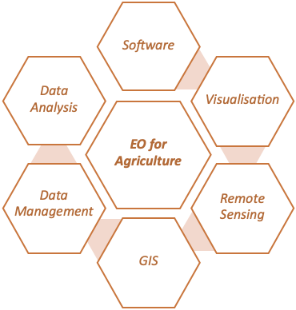
35 Personalised Learning Program for Training in the Use of Earth Observation for Agricultural Statistics
35.1 Introduction
The United Nations (UN) Global Working Group (GWG) on Big Data for Official Statistics was created in 2014, as an outcome of the 45th meeting of the UN Statistical Commission. In accordance with its terms of reference, a major focus of the UN GWG is the promotion of capability building and training in the use of Big Data sources. One of the GWG Task Teams (TT) in Big Data sources is the Satellite Imagery TT.
The inaugural TT on Satellite Imagery and Geo-Spatial Data was established in 2015 and chaired by the Australian Bureau of Statistics, Australia. Members included Australia (Australian Bureau of Statistics (ABS), Commonwealth Scientific and Industrial Research Organisation (CSIRO), Australian Research Council Centre of Excellence For Mathematical and Statistical Frontiers (ACEMS), Queensland University of Technology (QUT)), Colombia (National Administrative Department of Statistics, Departamento Administrativo Nacional de Estadística (DANE)), Mexico (International Telecommunication Union (ITU)), Google, IBM Research, the United Nations Statistics Division (UNSD) and Queensland Department of Science, Information Technology and Innovation (DSITI) was also an active member through Dr Michael Schmidt.
The final report by this team was published in 2017 as a Handbook. This handbook provides an introduction to the use of EO data for official statistics intended for new users. It includes types of sources available, examples of using EO data to compile the indicators for SDGs and methodologies for producing statistics from this type of data. It also summarises the results of four pilot projects produced by United Nations Satellite Imagery and Geospatial Data Task Team members to explore the feasibility of using EO data for official statistics, and additionally, other relevant and useful case studies. Supplementary material includes a methodology literature review. In the final chapter, guidelines are presented for National Statistical Offices to consider and refer to when considering whether to use EO data in producing official statistics, and issues to consider throughout the implementation and output processes. An expanded summary of the contents of this report is in the Appendix.
One of the goals of the Handbook, and indeed one of the highest priorities of the UN GWG on Big Data for official statistics, is the provision of training in the various areas of big data and data science, and in particular in the area of earth observation data for agricultural production statistics for evidence-based decision making in support of national policies and international agreements. This is in support of the Sustainable Development Goal (SGD) 2, Target 2.4: “by 2030, ensure sustainable food production systems and implement resilient agricultural practices that increase productivity and production, that help maintain ecosystems, that strengthen capacity for adaptation to climate change, extreme weather, drought, flooding and other disasters and that progressively improve land and soil quality”.
While training is a unilateral goal of the GWG and the TT, the conundrum is that the audience for relevant training programs is very diverse, ranging from beginners wishing to gain awareness or become highly skilled, to skilled professionals wishing to upgrade their expertise in specific facets of their work. This motivates more personalized approaches to training, as opposed to a “one size fits all” approach.
Although bespoke courses can be developed, many individuals and entities lack time, funding and skills to pursue this approach. Hence it is beneficial to take advantage of the many courses on aspects of earth observation data that are available online. However, the plethora of courses is both a blessing and a curse. These courses range from easy to advanced, conceptual to technical, and vary greatly by time to completion and workload. They also range across topics, covering issues such as access, management, analysis and interpretation. Moreover, the courses are offered by a very wide range of providers with diverse reputations and range widely in fee structures. As a result, an individual or organization seeking to make use of this wealth of potential online training can spend an enormous amount of time sifting through the options to identify courses that most suit their needs and expectations.
A solution to this conundrum that was developed by the authors for the UN GWG TT was the development of a Personalised Learning Program (PLP). The PLP provides a framework for identifying an individual’s current skill levels, learning ambitions and training parameters, and creating a suite of online courses that will provide a bridge between “where they are at now” and “where they want to be” in terms of their skills.
This chapter provides a brief overview of the Personalised Learning Program for training in the use of earth observation data for official statistics. Although not discussed here, the PLP Framework can be applied more generally to other training needs.
35.2 Overview of PLP Framework
The PLP Framework is a digital infrastructure that links four main components:
- PLP 1: User Profiles
- PLP 2: Knowledge Areas
- PLP 3: Learning Modules within the Knowledge Areas
- PLP4: Catalogue of Online Courses for each Learning Module
The digital infrastructure creates an individualised linkage of a user’s needs, identified through PLP1 and PLP2, with relevant modules and courses identified through PLP3 and PLP4. The recommended program of courses is compiled as a “shopping basket” that the user can then assess and personalise according to their preferences.
The PLP is accessed through a web-based interface that is displayed on the UN GWG website. The webpage provides the following options relevant to the PLP:
Learning paths: identify resources that correspond to your personal work setting, current knowledge and planned goals.
Search the Training Catalog: allows a direct search of resources (courses and materials) that help to develop skills for using big data sources in the production of official statistics.
The website also provides the capacity for updating and evaluating courses through the following options:
Keeping the catalog updated: Big Data is a very dynamic field. New needs and opportunities for training constantly emerge. To help us keep the catalog up to date, you are encouraged to inform us about new courses or materials that you have encountered and validate existing information.
Course evaluations: You are encouraged to provide feedback on courses/materials listed in this catalog. Your feedback will help us to improve the selection of courses in the catalog and provide guidance to course developers.
Other products available on the GWG website that are complementary to the PLP include the following:
- A Big Data Maturity Matrix: a self-assessment tool to help statistical offices understand the extent to which they have developed big data infrastructure and applications and to identify its strengths and weaknesses from which a development plan or road map may be produced.
- Big Data Competency Framework: provides the basis for linking training resources to existing and needed skills for the use of big data and identification of skill gaps, forming the basis for determining the personal learning paths.
35.3 PLP 1: User Profiles
In the design phase, a suite of user profiles was co-developed with TT partners to ensure that the PLP would meet the needs of diverse users. The user profiles included roles, professional background, use cases and (where relevant) expected software and programming skills.
An example of the user profiles is displayed in Table 35.1. Three roles are illustrated – Manager (M), Data Scientist (D) and GIS Expert (G) – with associated technical skills described in the professional background, software and programming columns. The software refers to the digital products provided to those enrolled in the course – FO and FD refer to free software platforms available for online or desktop, respectively, and CO and CD refer to commercial online and desktop software for which course providers distribute a temporary license.
| Role | Professional Background | ID | Use Case | Software | Programming language |
|---|---|---|---|---|---|
| M | All | E1 | EO and GIS for agricultural statistics: high level introduction to the new technology and paradigm shift provided by Big Data, Cloud Computing and Machine learning | NA | NA |
| M/G | E2 | Basics of GIS: raster and vector mode data; Georeferencing statistical data and production of maps; WebGis Dashboards and Web Gis apps (e.g. Story maps) | NA | NA | |
| G | E3 | Land cover mapping Supervised methods desktop users | FD/CD | NA/Python | |
| G | E4 | Crop mapping Supervised methods desktop users | FD/CD | NA/Python | |
| G | E5 | Development of web-gis apps and dashboards | CD/CO | NA/Python | |
| G | E6 | Extracting land cover and land use statistics from available GIS sources (e.g Forest and Crop cover from ESA maps) | CD/CO | NA/Python | |
| G/D | E7 | Field data collection - Best practices, GPS, field spectrometer | |||
| G/D | All | M1 | Land cover mapping using optical data in Google Earth Engine/R/Python | FO | Python/R/Javascript |
| G/D | M2 | Crop type mapping using optical data in Google Earth Engine/R/Python | FO | Python/R/Javascript | |
| G/D | M3 | Crop type mapping using unsupervised method in Google Earth Engine/R/Python | FO | Python/R/Javascript | |
| G/D | M4 | Crop type mapping using unsupervised method in Google Earth Engine/R/Python | CD | Python/R/Javascript | |
| G/D | M5 | Field data collection with drones | CD | N/A | |
| G/D | All | A1 | Classification using Optical and SAR supervised | any | Python/R/Javascript |
| G/D | A2 | Classification using Optical and SAR unsupervised | any | Python/R/Javascript | |
| G/D | A3 | Fourier transform and Principal Component analysis | any | Python/R/Javascript | |
| G/D | A4 | Crop type mapping using Optical and SAR | any | Python/R/Javascript | |
| G/D | A5 | Convolutional network and Deep Learning - Land cover and Crop mapping | any | Python/R/Javascript | |
| G/D | A6 | Working with hyperspectral data | any | Python/R/Javascript |
35.4 PLP 2: Knowledge Areas
Based on the user profiles, five essential knowledge areas for working with earth observation data are identified in the PLP – designed to cover all aspects of working with Earth Observations data. These are displayed in Figure 35.1 below.
35.5 PLP 3: Learning Modules with Knowledge Areas
For each of the five knowledge areas, Introductory, Intermediate and Advanced modules are identified in the PLP. The overall structure of the Knowledge Framework comprising the Knowledge Areas and corresponding Modules is depicted in Figure 35.2, with a break-out diagram for one of the Knowledge Areas – Remote Sensing – provided in Figure 35.3 for readability. The Modules are linked to a series of questions corresponding to skills that were identified as important in the development of the User Profiles. The questions corresponding to the Remote Sensing Modules are depicted in Figure 35.4.
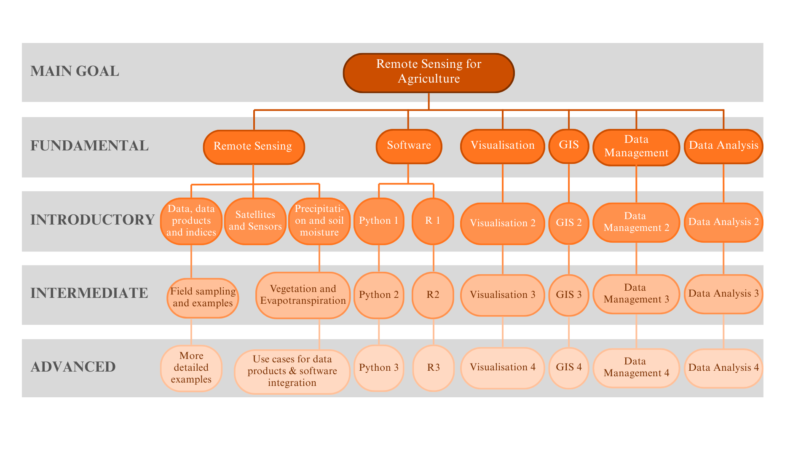
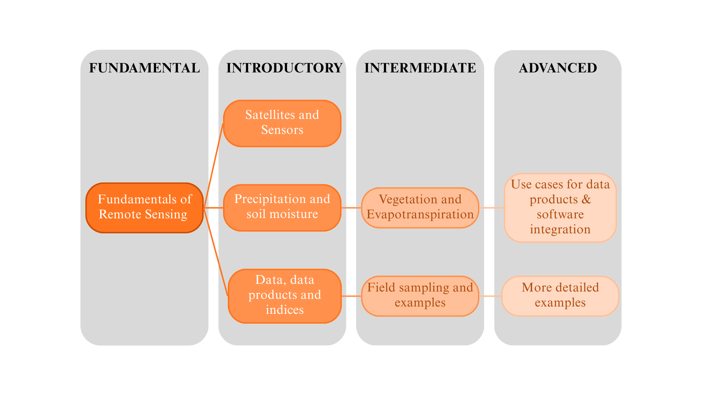
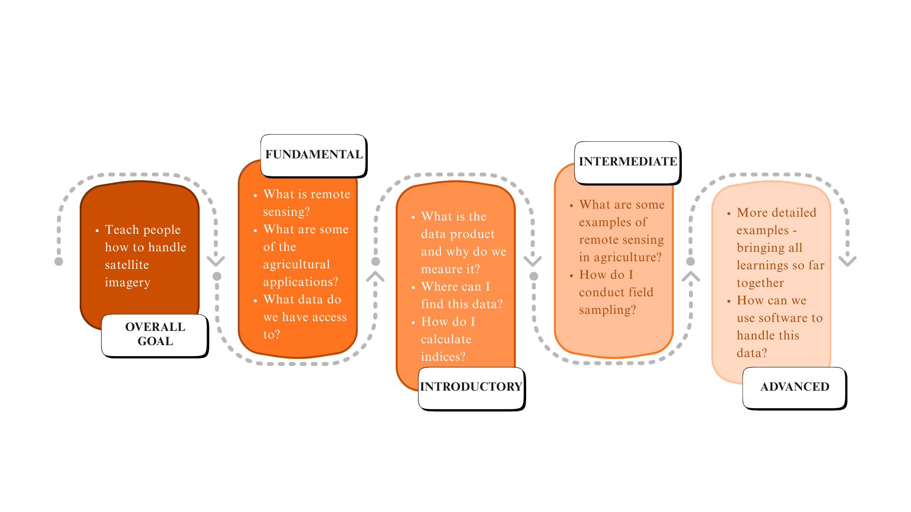
35.6 PLP4: Catalogue of Online Courses for each Module**
The PLP is underpinned by a detailed catalogue of relevant online courses that were available at the time of development (2021). Courses were required to satisfy the following criteria:
clearly relevant to a Knowledge Area
from a well-known provider
clearly specified the course details, including the target level (fundamental to advanced), time required to complete the course, course content, required software and pre-requisites.
access to free fee options
Metadata for each course was developed to include the Knowledge Area, the relevant Module(s), the relevant user profiles (manager, data scientist, GIS expert) and an ID based on training/difficulty level (see Table 35.1), as well as the course details as described above. The metadata files were then collated as searchable entries in the PLP catalogue.
35.7 Putting it all together
The overall PLP invites a user to identify their current skill level on a scale of 1-5 (1 basic, 5 advanced) for each of the five Knowledge Areas. They are then invited to identify the skill level that they would like to achieve through the learning program, using the same scale. An automated search of the PLP catalogue is then undertaken to satisfy the pathway from current to desired skill levels in the relevant Knowledge Areas. The results are returned as a list of Recommended Courses which the user can choose to add to their “shopping basket”. The user can then return to the search options for further courses or access their Learning Basket for a completed program of courses that are designed to meet their individual learning needs. This process is depicted in Figure 35.5.
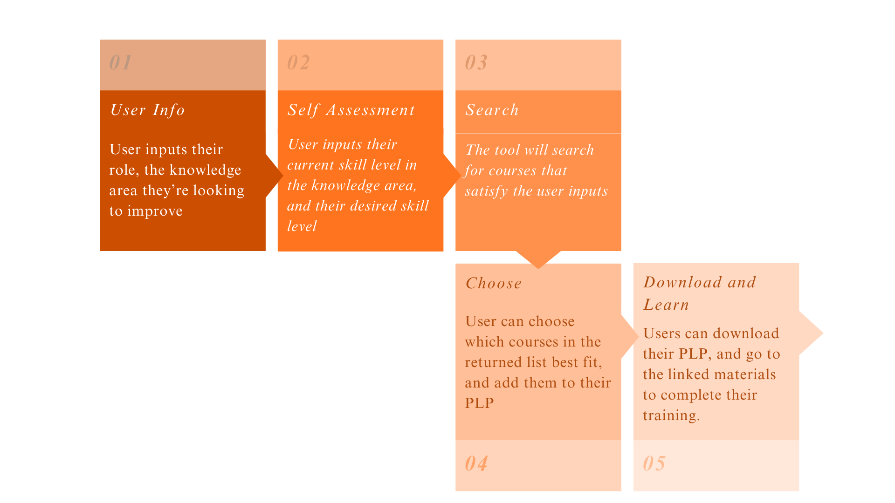
A representation of the self-assessment interface is depicted in Figure 35.6.
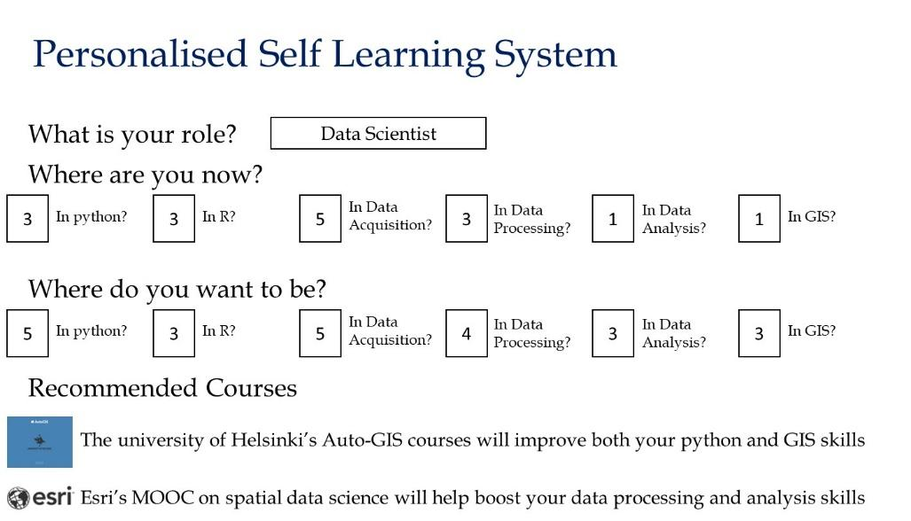
35.8 Digital Infrastructure
The PLP is available online through two portals: a UN TT webpage and an R Shiny app. A public github repository contains relevant material underpinning these platforms.
Both portals have similar user interfaces. The UN TT webpage that displays the PLP tool is shown in Figure 35.7. Notwithstanding this external similarity, there is quite a difference between the catalogue of courses in the two repositories. For example, none of the remote sensing courses are on the UN TT webpage. The reader is recommended to inspect both platforms for more complete information.
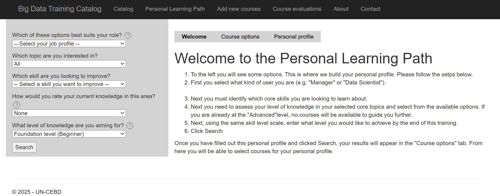
At the time of writing this chapter, the GWG Training Catalogue comprises 268 courses/materials relevant to training in Big Data and official statistics. This is a broader selection of material than is available through the PLP since not all the entries are online courses related to earth observation and agricultural statistics.
In addition to the interface to the PLP Catalogue described above, the catalogue entries can be searched directly by entering key words or phrases for relevant courses/materials. A blank field enables the display of all entries. For example, the entries returned from a search using the keyword ‘satellite’ are shown in Table 2.
As well as a basic search, an advanced search of the Catalogue enables selection of the following: language, provider name, provider type (all, academic/commercial, national/international), gives certificate, cost, type (part of program or specialisation, handbook, modular program, summer session, webinar), synchronous/asynchronous/hybrid, length, availability (when the course is run).
An option is also provided to add a course to the Catalogue.
| ID | Title | Provider | Language | Details Link |
|---|---|---|---|---|
| 202 | Agricultural Crop Classification with Synthetic Aperture Radar and Optical Remote Sensing | NASA | English; Spanish | Details |
| 204 | Satellite Remote Sensing for Agricultural Applications | NASA | English | Details |
| 206 | Land Cover Classification with Satellite Imagery | NASA | English; Spanish | Details |
| 208 | Introduction to synthetic aperture radar | NASA | English; Spanish | Details |
| 209 | Applications of Remote Sensing for Monitoring the Water Budget Within River Basins | NASA | English; Spanish | Details |
| 210 | Groundwater Monitoring using Observations from NASA’s Gravity Recovery and Climate Experiment (GRACE) Missions | NASA | English | Details |
| 211 | Remote Sensing of Coastal Ecosystems | NASA | English; Spanish | Details |
| 214 | Introduction to Global Precipitation Measurement (GPM) Data and Applications | NASA | English; Spanish | Details |
| 215 | Accuracy Assessment of a Land Cover Classification | NASA | English | Details |
| 216 | Investigating Time Series of Satellite Imagery | NASA | English; Spanish | Details |
| 217 | Applications of GPM IMERG Reanalysis for Assessing Extreme Dry and Wet Periods | NASA | English | Details |
| 218 | Change Detection for Land Cover Mapping | NASA | English | Details |
| 220 | Creating and Using Normalized Difference Vegetation Index (NDVI) from Satellite Imagery | NASA | English | Details |
| 253 | GIS Specialization | UC Davis | English | Details |
| 291 | Tourism Satellite Accounts | Eurostat | English | Details |
| 292 | Introduction to statistics production with the use of geographical information systems (GIS) | EFTA | English | Details |
35.9 Case Study: Crop mapping using the Sen2Agri toolbox
The Sen2Agri toolbox developed by Pierre Defourny, Sophie Bontemps and their team at UC Louvain is a user-friendly software that allows for automatic acquisition and preprocessing of EO data, manual upload of in-situ data, and production of crop maps using a Random Forest classifier. It can run both locally and on the Cloud. A cameo of the Sen2Agri process is shown in Figure 35.8.
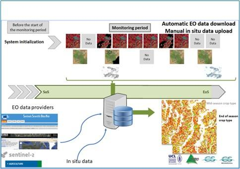
A program that could be implemented for training in the use of Sen2Agri is shown in Figure 35.9.
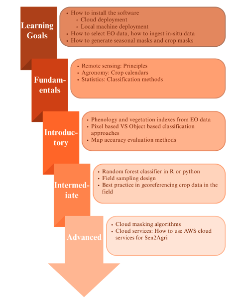
35.10 Discussion and Future Work
This chapter has described the Personalised Learning Program (PLP) developed for the United Nations Global Working Group (Big Data) Task Team on the use of earth observation data for agricultural statistics. The PLP is publicly available on the UN GWG website.
The appeal of the PLP is the ability to quickly identify trusted courses that bridge the gap between a user’s current and desired skill levels in key knowledge areas. The courses recommended by the PLP are tailored to the type of user (manager, data scientist, GIS expert).
The PLP is underpinned by a searchable catalogue that comprises metadata on a large suite of courses identified as relevant to the five knowledge areas. This list was obtained through extensive manual searches at the time of development. Users are invited to update and expand the courses listed in the catalogue and provide feedback on the merit of any courses undertaken.
The field of big data in general, and remote sensing/earth observation in particular, is growing enormously. Correspondingly, there is an explosion in online courses in general, and in the area relevant to the PLP in particular. Although the current PLP catalogue is valuable, it has much more value if the entries are regularly checked to ensure that courses are still available, and a comprehensive search of potential new courses is undertaken. The advent of Large Language Models (LLMs) such as ChatGPT provide a convenient way to perform these updates. LLMs also provide an alternative method for extracting training needs from users and delivering training options. This potential has not been pursued here but is a worthy future project.
A related worthy project is the use of the Training Catalogue and the PLP to create expanded ‘spines’ of training programs. The spine is made up of the higher-level topics, or knowledge areas and shows how they break down into recommended courses. An example is shown in Figure 35.10 with the spine now comprising vegetation, soil moisture, precipitation and evapotranspiration, in addition to the existing Knowledge Areas of Remote Sensing, Visualisation and Software Fundamentals. An example of a potential corresponding Spine course is shown in Figure 35.11.
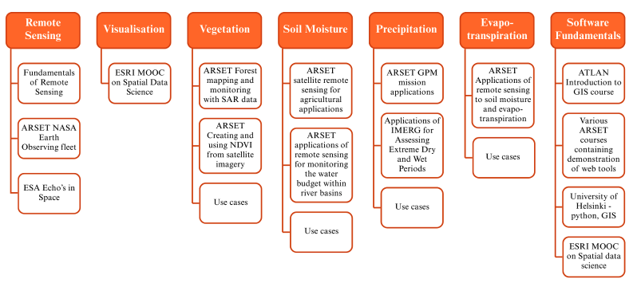
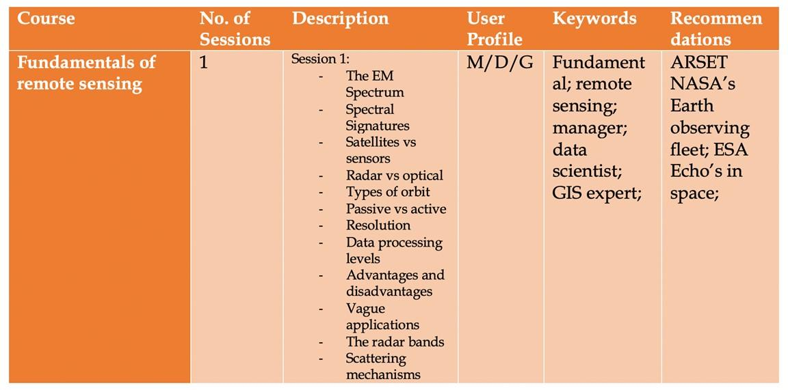
A range of valuable training online and in-person courses on earth observation data and agricultural statistics is also provided at national and regional levels by entities such as the UN Regional Hubs. These courses are currently not included in the PLP Catalogue, but they should be.
As detailed above, the UN website also includes a Maturity Matrix and Competency Framework. These documents provide excellent support material for organisations and are also highly recommended reading for individuals.
A final note is that the current PLP does not provide certification or credentialing. These issues have been discussed extensively by other UN Task Teams. Interested readers are referred to the webpage for the Task Team on Training, Competencies and Capacity Building.
Appendix: Summary of White Paper, “Earth Observations for Official Statistics 2017”
In 2017 a white paper was published by the United Nations Task Team on Satellite Imagery and Geospatial Data titled “Earth Observation for Official Statistics”. This white paper, intended as a handbook, was written by an interdisciplinary team of members of the United Nations Task Team on Satellite Imagery and Geospatial Data. Led by the Australian Bureau of Statistics and Chief Methodologist Dr Siu-Ming Tam as then chair of the task team, the intention was to provide a guide for National Statistical Offices considering using satellite imagery (known as earth observations) data for official statistics. It was an intended input to the United Nation Global Working Group on Big Data for Official Statistics report to the United Nations Statistical Commission for 2017.
Here we provide a brief summary of each of the substantive chapters (2-5, Chapter 1 is introduction and overview and Chapter 6 is a conclusion).
Chapter 2- Data sources (lead authors Dr Arnold Dekker, Dr Alex Held and Ms Flora Kerblat from CSIRO, Australia). This chapter introduces types of earth observation systems (low, medium and geostationary) and provides a detailed overview of freely available satellite sensor data current as at 2017. It describes categories of methods for analysing these data (empirical, semi-empirical, physics-based, object based image analysis (OBIA) methods and artificial intelligence (AI) and machine learning methods. It includes case study examples, such as the Geoscience Australia data cube, which provided proof of concept for additional CEOS datacubes, and examples of United Nations Sustainable Development Goals (SDGs) that can be monitored using earth observation data. This chapter distinguishes between unprocessed earth observation data and analysis ready data and discusses validity of different data and assessing whether it is fit for purpose. Importantly, the chapter provides mapping between statistician and earth observations scientist definitions of: Relevance, Timeliness, Accuracy, Coherence, Interpretability, and Accessibility, and add two additional definitions from the EO discipline; integrity and utility for assessing EO data quality for use in official statistics1(Table 2).
Chapter 3- Methodology (lead authors Jacinta Holloway-Brown (Australian Bureau of Statistics) and Kerrie Mengersen (Queensland University of Technology, Australia). This chapter provides a general three step approach to analysing earth observation data and big data more broadly, including data selection and management, (step 1: pre-processing), selecting analytic aim and method (step 2- analysis) and critically assessing results and performing accuracy assessment (step 3- evaluation)1. It describes potential software products and provides an overview of the UN FAO accuracy assessment approach for map data. Importantly, it provides an extensive literature review and detailed summary of statistical machine learning methods suited to analysing earth observation data. These are categorised into four main analytic aims: classification, clustering, regression and dimension reduction. Classification methods include logistic and multinomial regression (generalised linear models), support vector machines, neural networks, classification trees, k-nearest neighbours and intra- or sub-pixel classification. Clustering methods include mixture models, k-means and agglomerative clustering. Regression methods include linear regression and extensions, regression trees and variations such as random forests, state space models, neural networks, spectral angle classification and functional analysis. Finally, dimension reduction methods include functional data analysis and principal components analysis.
Chapter 4 - Pilot projects and case studies (Authorship listed on each pilot project and case study). This chapter provides examples to demonstrate how Earth Observation data is being used in practice by NSOs and industry. It summarises three pilot projects produced by Task Team members; Australian Bureau of Statistics (ABS), Australia, Instituto Nacional de Estadística Geografíca e Informática (INEGI), Mexico, Departamento Administrativo Nacional de Estadistica (DANE), Colombia and Google. These are as follows:
Pilot Project 1: Application of satellite imagery data in the production of agricultural statistics, undertaken by the Australian Bureau of Statistics (ABS). Authorship led by Jennifer Marley, Ryan Defina, Kate Traeger, Daniel Elazar, Anura Amarasinghe and Gareth Biggs.
Pilot Project 2: Study on Skybox Commodity Inventory Assessment, led by UNSD and undertaken by Google. Authorship led by Patrick Dunagan.
Pilot Study 3: Study on the use of satellite images to calculate statistics on land cover and land use, undertaken by Departamento Administrativo Nacional de Estadistica (DANE), Colombia. Authorship led by Sandra Yaneth Rodriquez.
Additionally, this chapter describes five case studies. Each pilot project and case study includes information about the data specifications, data processing, data selection and any quality issues.
Case Study 1: an evaluation of the implementation of various machine learning techniques for analysis of EO data for crop classification, undertaken by Queensland University of Technology (QUT) Australia. Authorship led by Brigitte Colin, Benjamin Fitzpatrick and Kerrie Mengersen (QUT).
Case Studies 2 and 3: two published implementations of EO data analyses for estimation of crop yield. Case study 2 by Gao et al (2017) titled ’Toward mapping crop progress at field scales through fusion of Landsat and MODIS imagery’2. Case study 3 by Yeom and Kim (2015) titled ’Comparison of NDVIs from GOCI and MODIS Data towards Improved Assessment of Crop Temporal Dynamics in the Case of Paddy Rice’3.
Case Studies 4 and 5: Two fully operational methods developed for the analysis of EO data to derive official statistics. Case study 4 by Queensland Department of Science, Information Technology and Innovation (DSITI), Australia is titled ‘An Operational Framework for large area mapping of past and present cropping activity using seasonal Landsat images and time series metrics’. Authorship led by Matthew Pringle and Michael Schmidt (DSITI).
Case study 5: by Statistics Canada is titled ‘An operational approach to integrated crop yield modelling using remote sensing, agroclimatic data and survey data’. Authorship led by Statistics Canada.
Chapter 5- Recommendations (lead authors Jacinta Holloway-Brown and Siu-Ming Tam). This chapter provides guidelines and issues for National Statistical Offices to consider when deciding to implement earth observations data sources into their statistical production processes. It describes potential applications of EO for official statistics, such as partial data substitution and generating new insights. It includes a cost-benefit analysis guide specific to the use of Big Data by Tam (co-author of Chapter 5) and guidance on selecting an appropriate EO dataset based on advice by CSIRO, Australia. Practical considerations such as minimum data requirements (Figure 35.12), data access and ownership, quality assessment and output dissemination are also described. Finally, this chapter provides further recommendations for practitioners working with EO data for the first time such as identifying skills, undertaking training, engaging with the public around privacy perceptions and disseminating results and sharing experience through global channels such as the United Nations Task Teams and broader Global Working Groups to foster innovation and collective best practice.
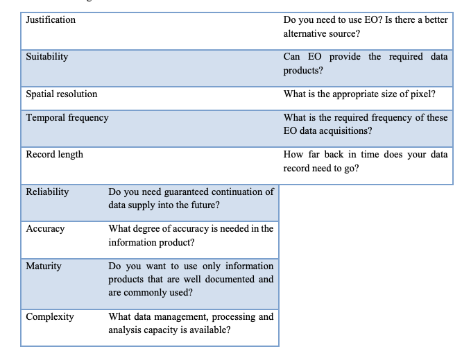
Supplementary material includes a methodology literature review, and the full reports of the pilot projects.